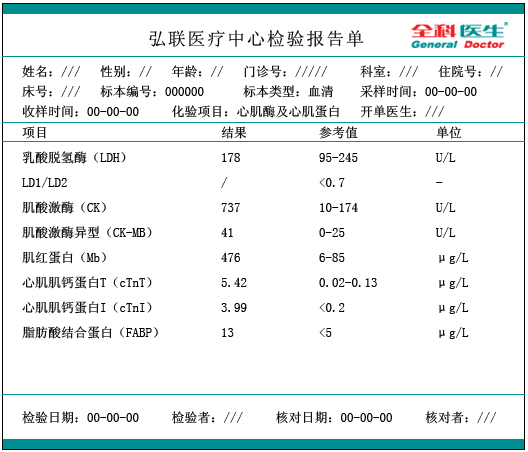
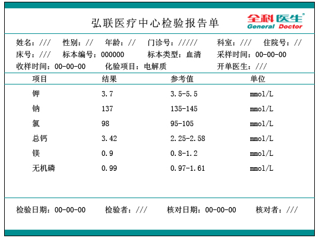
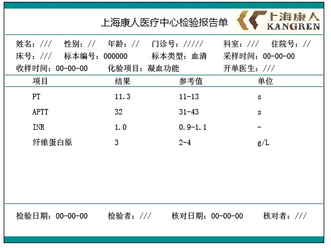
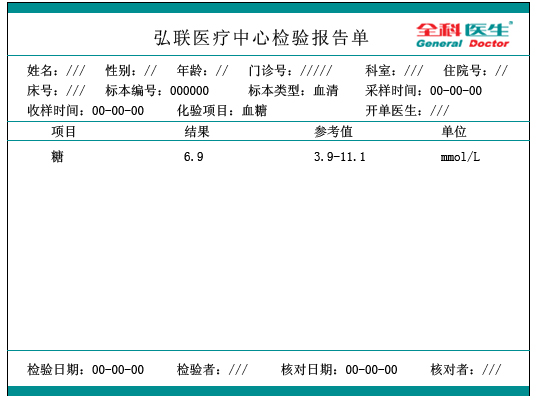
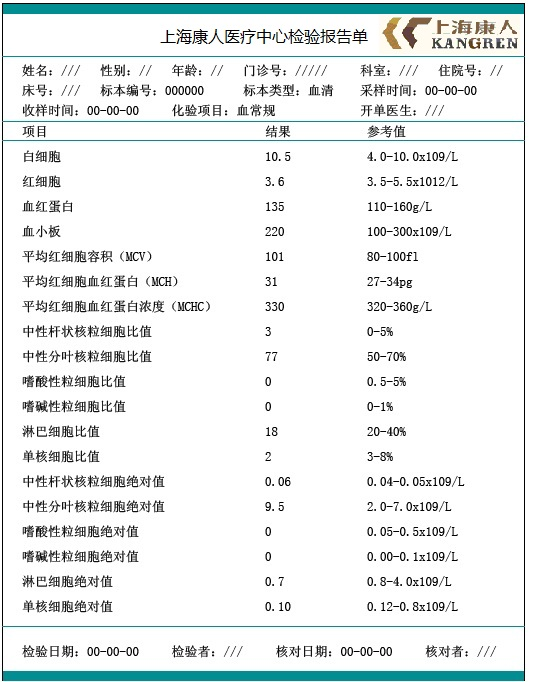
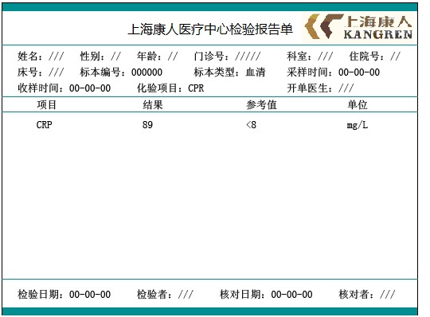
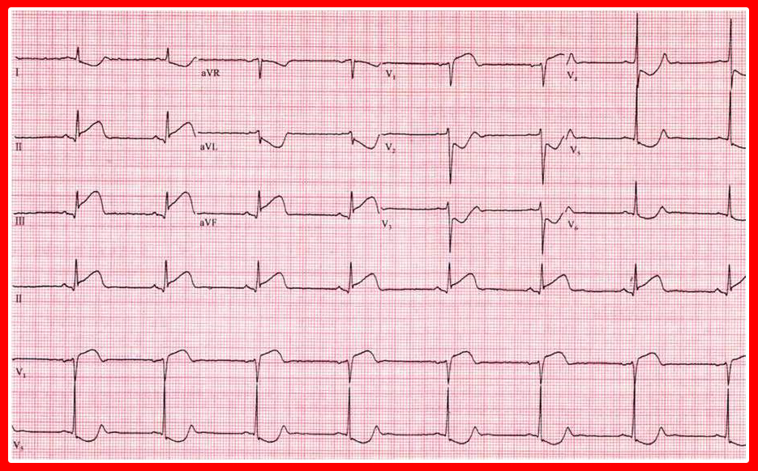
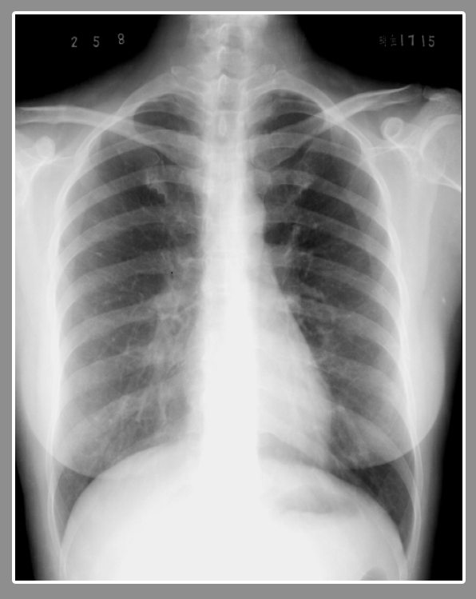
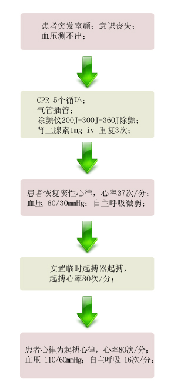

【病例摘要】
- 现病史：女性，48岁，上腹部不适4小时。患者诉上腹部不适，恶心，胸闷，出冷汗，濒死感。
- 既往史：高血压病史6年，最高血压150/100mmHg，未正规治疗。无烟酒嗜好。
- 查体：BP 70/30mmHg，肥胖体型，呼吸 16次/分，双肺叩诊清音，无干湿性啰音。心界向左扩大，心尖搏动位于左锁骨中线第五肋间外1cm，呈抬举性搏动，HR 47次/分，未及明显杂音。腹部无异常，双下肢无浮肿。

【辅助检查】
- 心肌酶谱:
 - 电解质:
 - 凝血功能:
 - 血糖:
 - 血常规:
 - CRP:
 - 心电图:
 - 胸片:

【诊断】
- 冠心病 下壁心肌梗死（超急性或急性期）右心室梗死（超急性或急性期）窦性心动过缓
【事件】
